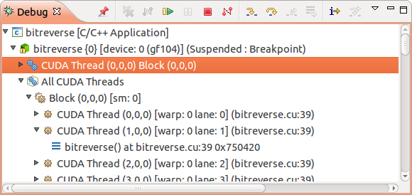
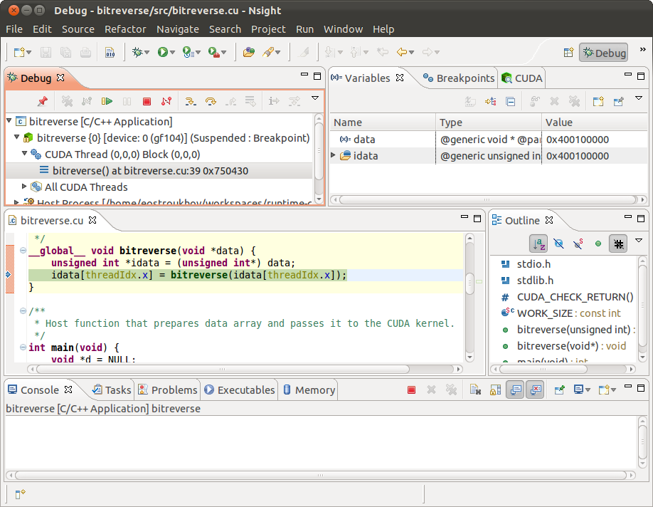
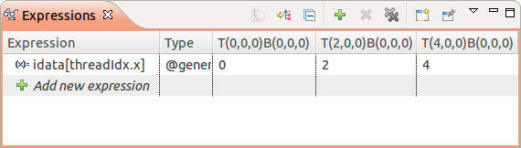

CUDA applications rely on launching a large number of concurrent threads for performance. This is drastically different from traditional approach to software design where threads are considered "expensive" resource that should be used sparingly. Nsight visual debugger design goal is to make debugging GPU application with thousands of threads similar to debugging traditional applications.
CUDA kernels, blocks and threads are shown in the Debug view alongside host processes and threads. See Debug view for details.
Nsight will focus on a first device thread that received the event (e.g. hit the breakpoint, threw device exception) when application is suspended in the device code. This thread will be shown in the Debug view and will become an input for Variables, Expressions and Registers views. This thread is considered a debugger focus and will be the subject for any subsequent debugger action, such as stepping or changing variable value, unless the user explicitly selects a different thread. 
Focus thread that is not pinned appears under the kernel tree node and has a blue gears icon. Source editor will switch to show the source line where the debugger stopped.
To focus a debugger on the different thread select corresponding node in under All CUDA Threads node in the Debug view. Source editor and context-dependent views will be updated to reflect values from the selected thread. Resuming application execution will replace focus thread with the one selected manually.
CUDA view can also be used to select a different debugger focus thread. See CUDA view help topic.
CUDA is a parallel runtime, where many threads perform the same work.
To make it easier to explore values across several threads, Nsight
allows pinning of the device threads that need to be tracked
through the application execution. All pinned threads appear under
kernel node in the Debug view and will be remembered between
application restarts.
Pinning threads will switch Variables, Expressions and Registers views into multi-column mode showing values for every pinned thread. 
To remove a thread from the pinned threads list, select it in Debug or CUDA view and click Unpin button on the view toolbar.